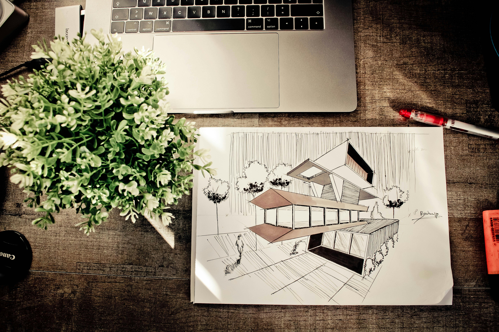
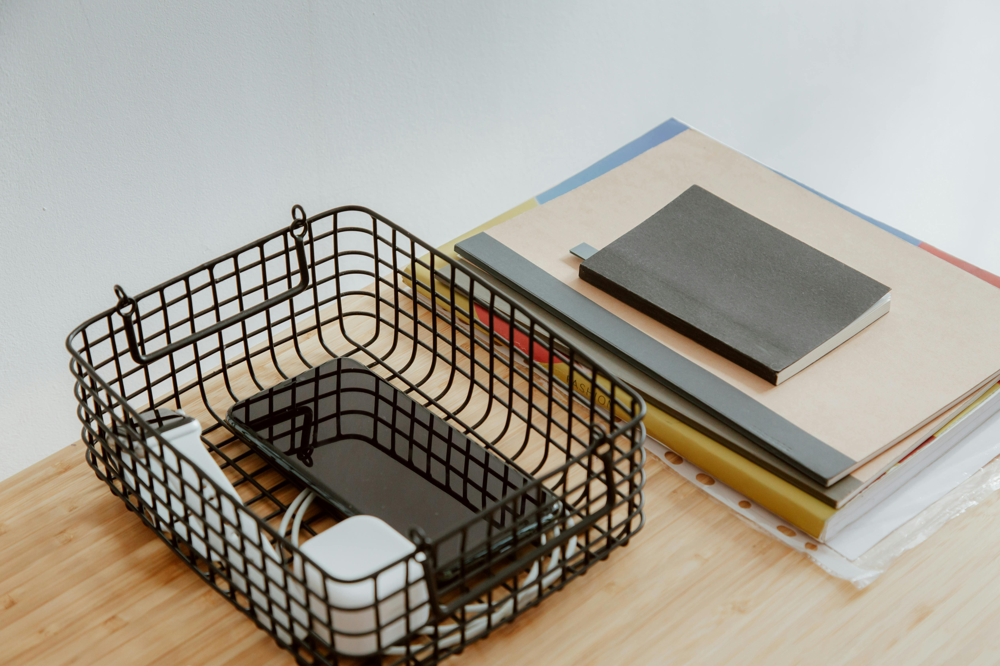

Aprovação em Vestibulares
Fui aprovada em seis vestibulares, resultado de dedicação, disciplina e constância ao longo da minha formação.
Iniciando minha trajetória na arquitetura com foco em desenvolvimento técnico e pessoal, organização, planejamento e evolução contínua.
Sou estudante de Arquitetura e Urbanismo, com formação em escola particular e trajetória construída com base em disciplina e desempenho acadêmico, o que me levou à aprovação em seis vestibulares. Atualmente, concilio a graduação com o desenvolvimento técnico por meio de cursos voltados a softwares da área. Paralelamente, trabalho com costura, contribuindo com a renda familiar e custeando minha formação, o que exige organização, responsabilidade e gestão eficiente do tempo.
Resultado de disciplina, constância e dedicação aos estudos ao longo da minha trajetória acadêmica.
Capacidade de manter desempenho mesmo em uma rotina exigente, com foco em resultados bem estruturados.
Facilidade em identificar melhorias e aplicar ajustes para aprimorar constantemente a qualidade do trabalho.
Fui aprovada em seis vestibulares, resultado de dedicação, disciplina e constância ao longo da minha formação.

Atualmente, realizo cursos voltados a softwares da área, buscando fortalecer minha base técnica desde o início da graduação.

Concílio estudos com trabalho, desenvolvendo organização, gestão de tempo e responsabilidade no cumprimento de objetivos.